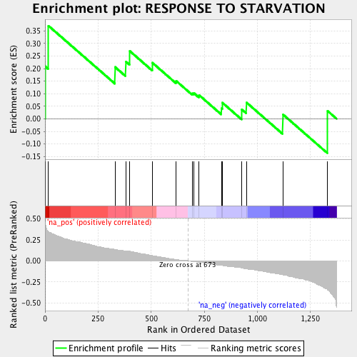
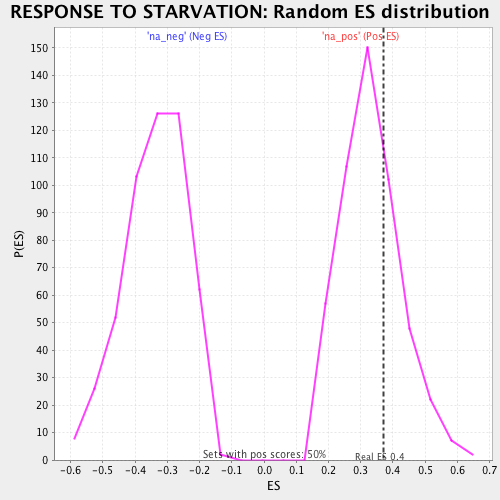

| | | Dataset | ranked_by_GEF.rnk |
| Phenotype | NoPhenotypeAvailable |
| Upregulated in class | na_pos |
| GeneSet | RESPONSE TO STARVATION |
| Enrichment Score (ES) | 0.37026113 |
| Normalized Enrichment Score (NES) | 1.1111253 |
| Nominal p-value | 0.31919193 |
| FDR q-value | 0.9971297 |
| FWER p-Value | 1.0 |
Table: GSEA Results Summary

Fig 1: Enrichment plot: RESPONSE TO STARVATION
Profile of the Running ES Score & Positions of GeneSet Members on the Rank Ordered List
| PROBE | GENE SYMBOL | GENE_TITLE | RANK IN GENE LIST | RANK METRIC SCORE | RUNNING ES | CORE ENRICHMENT | | 1 | MIG1 | | | 1 | 0.439 | 0.2088 | Yes |
| 2 | RVS161 | | | 16 | 0.360 | 0.3703 | Yes |
| 3 | NPP1 | | | 330 | 0.138 | 0.2060 | No |
| 4 | SNF1 | | | 380 | 0.123 | 0.2285 | No |
| 5 | RIM15 | | | 399 | 0.115 | 0.2700 | No |
| 6 | NPR3 | | | 506 | 0.065 | 0.2230 | No |
| 7 | PRB1 | | | 618 | 0.020 | 0.1507 | No |
| 8 | DPL1 | | | 694 | -0.012 | 0.1012 | No |
| 9 | IRS4 | | | 701 | -0.012 | 0.1025 | No |
| 10 | OPY2 | | | 726 | -0.020 | 0.0942 | No |
| 11 | NPR2 | | | 831 | -0.051 | 0.0423 | No |
| 12 | SUT2 | | | 836 | -0.051 | 0.0638 | No |
| 13 | HST4 | | | 926 | -0.083 | 0.0380 | No |
| 14 | PHO5 | | | 949 | -0.091 | 0.0652 | No |
| 15 | SNF2 | | | 1120 | -0.163 | 0.0182 | No |
| 16 | GIS1 | | | 1331 | -0.352 | 0.0316 | No |
Table: GSEA details [plain text format]

Fig 2: RESPONSE TO STARVATION: Random ES distribution
Gene set null distribution of ES for RESPONSE TO STARVATION